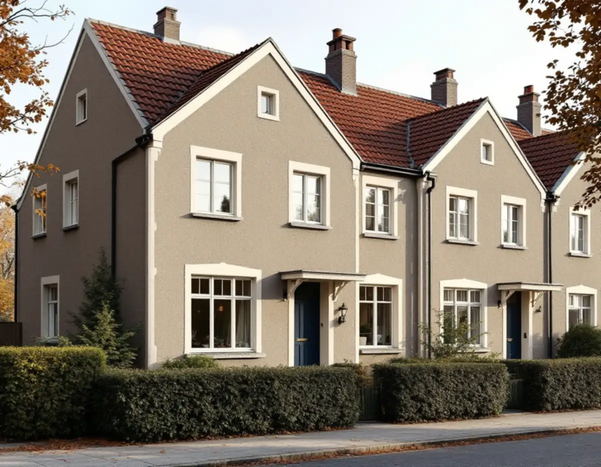
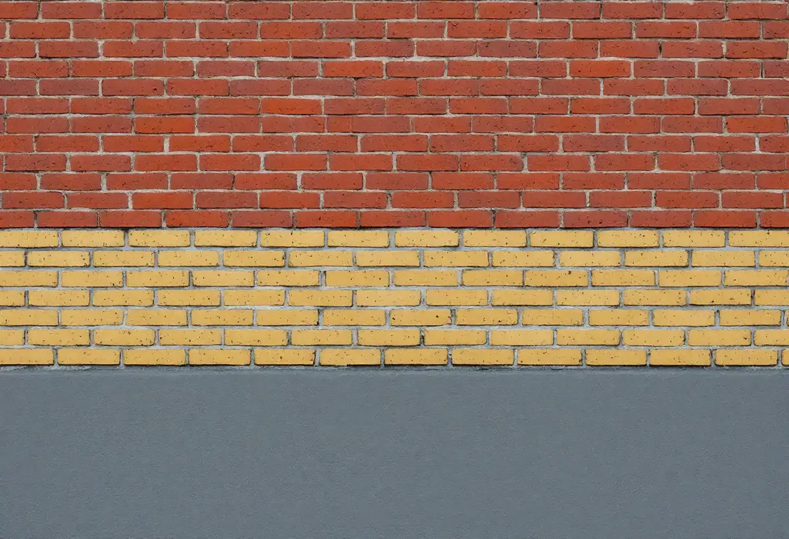

Besök i längan
Vi tittar på puts, tegel, fogar, gesimser och bleck och jämför med grannhusen i samma länga.
I Hersby ligger tre av Lidingös radhusområden från efterkrigstiden nära varandra, men med helt olika fasader: brädriven puts på Stureplatån, spritputs i Hersby gärde och rött tegel med gula band i Hersby åker. Geal Entreprenad AB renoverar fasader på hela Lidingö och samordnar ställning, puts, murning, plåt och målning, med gratis platsbesök och skriftligt kostnadsförslag.

Stureplatån. Radhusen började byggas 1945, och bröderna Erik och Tore Ahlsén ritade längorna i kvarteren Fröja, Heimdal och Skuggan. Kulturmiljöprogrammet beskriver fasader av brädriven slätputs i en färgsättning typisk för 1940-talet, i rött, brutet vitt, gult och grönt, med beigeputsade omfattningar som delar in och ramar in fasaderna.
Hersby gärde. Radhusen vid Kämpavägen och Laduvägen ritades 1948 av Ancker, Gate & Lindegren. Fasaderna är spritputsade i gråbeige eller brunrosa, med slätputsade lisener, fönster- och dörromfattningar och gesimser. Fönstren sitter i fasadliv, på övre våningen hänger de i gesimsen, och taken saknar taksprång.
Hersby åker. Holger Blom ritade de 13 radhuslängorna, uppförda 1949–1956. Fasaderna är murade i rött tegel med dekorativa band av gult tegel som markerar vånings- och lägenhetsindelning, och socklarna är grå. Programmet beskriver husen som i stort sett oförändrade sedan de byggdes.

På en putsfasad syns en lagning med fel struktur på långt håll. I Hersby gärde är det kontrasten mellan grov spritputs på väggytorna och slät puts kring fönster, dörrar och hörn som bär arkitekturen, och programmet råder att de spritputsade fasaderna underhålls så att de behåller sin ursprungliga karaktär. På Stureplatån är det i stället den släta, brädrivna ytan som ska återskapas.
Boverket skriver att de vanligaste skadorna på putsade fasader är sprickor och putsbortfall, och att putsbortfall i de allra flesta fall beror på fukt. Fuktig puts kan frysa sönder om fukten blir kvar i fasaden över vinterhalvåret. Innan något lagas letar vi därför efter orsaken: ett läckande fönsterbleck, en skadad gesims eller en sockel som suger vatten.
Lös puts knackas ner, underlaget rensas och nytt bruk byggs upp i samma tjocklek och struktur som det gamla. Därefter avfärgas hela fasadytan, så att lagningen smälter in. Programmet råder också att äldre fönster, dörrar och smidesräcken bevaras och renoveras med väl anpassade material och metoder, och att kopior tillverkas när originalen inte går att rädda. Färgsättningen hör till det programmet vill bevara, och mer om den finns hos målare på Lidingö.
För Hersby åker säger programmet att fasaderna av rött tegel med gula band har en sammanhållande verkan i området och bör underhållas så att de behåller sin ursprungliga karaktär. De dekorativa skärmtaken med fransade baldakiner och balkongerna med smidesräcken bör underhållas med traditionella material och metoder.
En tegelfasad behöver sällan mer än lagning av fogar och enstaka stenar, men arbetet syns om fogbruket får fel kulör eller sammansättning. Därför provar vi bruket mot befintliga fogar innan arbetet börjar. Där skärmtak, balkonger och fönsterbleck ansluter mot teglet kontrollerar vi att vattnet leds bort från muren.
Utvändig tilläggsisolering är knappast aktuell på husen i Hersby. Fönstren i Hersby gärde sitter i fasadliv, taken saknar taksprång och fasaderna har lisener och gesimser, och en tjockare vägg skulle ändra allt det. Boverket påpekar att invändig isolering i stället lämnar fasaden orörd, men att den ökar risken för fuktskador som frostsprängning i tegel och sten.
Lidingö stad skriver att bygglov för fasadändringar på en- och tvåbostadshus slopades den 1 december 2025, men att utökad lovplikt gäller för de flesta byggnadsåtgärder inom särskilt kulturhistoriskt värdefulla områden. I stadens webbkarta visas de som ett blått lager, och en gulmarkerad fastighet kan ha värden som behöver bedömas.
Kulturmiljöprogrammets första del, en handbok för fastighetsägare, beskriver hur detaljplaner och områdesbestämmelser kan ge utökad lovplikt även för omfärgning, byte av fasadbeklädnad och underhåll av ett byggnadsverk. En skyddsbestämmelse kan dessutom precisera hur underhållet ska utföras. Råden för de enskilda områdena är inte juridiskt bindande, men staden använder dem som stöd när bygglov och planärenden handläggs.
Är du osäker på vad som gäller för ditt radhus kan du söka frivilligt bygglov eller kontakta stadens kundcenter. I en radhuslänga är det också klokt att stämma av med grannarna, eftersom fasaden läses som en helhet.
Vi tittar på puts, tegel, fogar, gesimser och bleck och jämför med grannhusen i samma länga.
Vi läser områdets råd i kulturmiljöprogrammet och kontrollerar om fastigheten ligger i det blå lagret.
Lagning, omfogning, avfärgning och plåtarbeten redovisas var för sig i ett skriftligt förslag.
Bruk och struktur provas på en liten yta, så att lagningen matchar det befintliga.
Lös puts tas ner, fogar och skador lagas och bleck och gesimser ses över.
Fasaden avfärgas i den ursprungliga kulören och vi går igenom resultatet med dig.
Att mura och reparera fasader, byta och reparera fasader och rengöra och måla fasader i ett småhus ger rotavdrag. Skatteverket medger 30 procent av arbetskostnaden, högst 50 000 kr per person och år, och rot och rut tillsammans får inte överstiga 75 000 kr.
Är radhuset en bostadsrätt gäller avdraget bara arbete inne i bostaden, så fasaden ger då inget avdrag. Geal drar avdraget direkt på fakturan.
Hur stora ytor av putsen som har släppt, hur mycket fogar och tegel som behöver lagas, om gesimser, omfattningar och skärmtak ska återskapas och hur stor del av fasaden som ska avfärgas. Radhus uppe på en bergknalle kan kräva mer ställning. Platsbesöket kostar inget, och du får ett skriftligt kostnadsförslag.
Puts, panel och tilläggsisolering.
Fasadrenovering i Stockholm →Takbyte, takbesiktning och plåtarbeten.
Takläggare på Lidingö →Brevik, Mölna och Käppala.
Takrenovering på Lidingö →Panel, puts och slamfärg.
Målare på Lidingö →Tillbyggnad och renovering.
Byggföretag på Lidingö →Nya golv och slipning.
Golvläggare på Lidingö →Altan, dörrar och snickerier.
Snickare på Lidingö →Potten, avloppet och kulturmiljöerna.
Attefallshus på Lidingö →Värdefulla hus, kulör och bidrag.
Fasadmålning på Lidingö →Villastäderna och Brevik på Lidingö.
Fönsterbyte på Lidingö →Slipa och behandla trägolv i kök och hall.
Golvslipning på Lidingö →Plåt i vind och värdefulla miljöer.
Plåtslagare på Lidingö →Nytt material, k-märkning och byggnadsminnen.
Takbyte på Lidingö →Ny tapet med hänsyn till huset.
Tapetsering på Lidingö →Webbkartan, programmet och frivilligt lov.
Tillbyggnad på Lidingö →Behåll stommen, bygg om resten.
Totalrenovering på Lidingö →